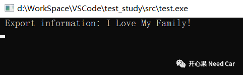

开心果 Need Car · 2021-12-09T12:16:00+08:00 · 微信原文
前言
#作用
#主要是在预处理阶段将宏参数转化为字符串。
#include<stdio.h> #include<stdlib.h> //#输出信息 #define ExportInfo(info) printf(" Export information: %s\r\n",#info) int main(int argc, char *argv[]) { ExportInfo(I Love My Family!); return 1; } |

#在开发中的应用
/* Function call without return */ #define __non_return_call(fun) __asm__ volatile ("j "#fun) /* Call main function of Cpu0 */ ...... __non_return_call(core0_main) ...... |
__non_return_call(core0_main) 等价 __asm__ volatile ("j " "core0_main") |
使用场景
有Boot程序，在Boot中，跳转App主程序
没有Boot程序，启动程序结束，跳转用户主程序